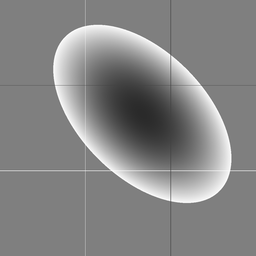
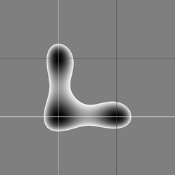
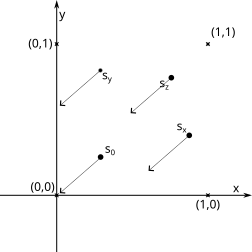
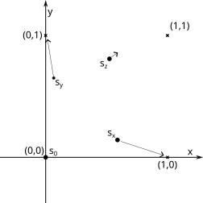
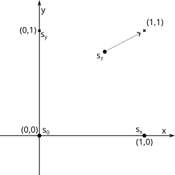
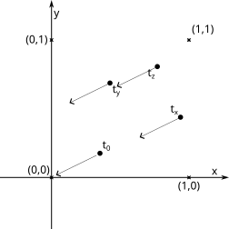
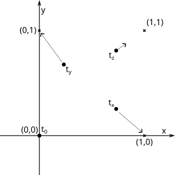
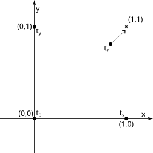

| m11 | m12 |
| m21 | m22 |
| h11 | h12 | h13 |
| h21 | h22 | h22 |
| | ||
| h23 | h32 | h33 |
|
|
= |
|
| 1 | 0 | X |
| 0 | 1 | Y |
| | ||
| 0 | 0 | 1 |
| a11 | a12 | 0 |
| a12 | a22 | 0 |
| | ||
| 0 | 0 | 1 |
| a11 | a12 | a13 |
| a21 | a22 | a23 |
| | ||
| 0 | 0 | 1 |
| Where: |
|
is linear part. |
(0,0) = P(0,0);
(1,0) = P(1,0);
(0,1) = P(0,1);
(X,Y) = P(1,1);
| X | 0 | 0 |
| 0 | Y | 0 |
| | ||
| 1-Y | 1-X | X+Y-1 |
| 0 ≠ (1-Y)2 + ( 1-X )2 + ( X+Y-1 )2 Always ≠ 0. Always exists. |  |
(0,0) = P(0,0);
(1,0) = P(1,0);
(0,1) = P(0,1);
(1,1) = P(X,Y);
| Y * (X + Y - 1) | 0 | 0 |
| 0 | X * (X + Y - 1) | 0 |
| | ||
| Y*(Y - 1) | X*(X - 1) | X*Y |
| 0 ≠ (Y*(Y - 1))2 + (X*(X - 1))2 + (X*Y)2 (X,Y) ≠ (0,0) (X,Y) ≠ (0,1) (X,Y) ≠ (0,0) |
 |
| Ts: translation matrix, translate from s0 to o=(0,0) |  |
Ms:
( 1, 0 ) = Ms( Ts ( sx ) ) , |
 |
Ps:
(0,0) = Ps( (0,0) ), |
 |
| Tt: translation matrix, translate from t0 to o |  |
Mt:
( 1, 0 ) = Mt( Tt ( tx ) ), |
 |
Pt:
(0,0) = Pt( (0,0) ), |
 |